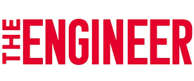
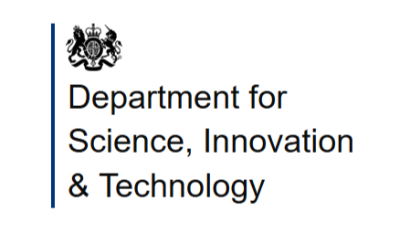
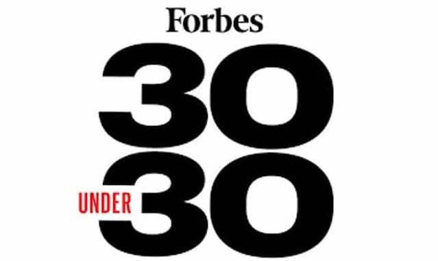
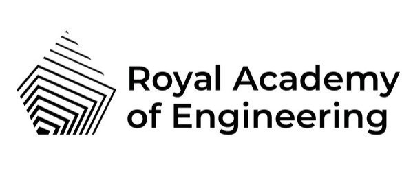

Cut battery replacement cycles.
Reduce site visits, downtime, and waste in sensing deployments that are costly to maintain.
Enabling true IoT autonomy through world-leading RF power delivery
Reduce site visits, downtime, and waste in sensing deployments that are costly to maintain.
Battery-free sensing networks that are compatible with existing IT infrastructure, with minimal deployment overhead.
Support sensing in challenging environments where wiring or battery service does not scale.
Wireless power hubs and sensor nodes designed for different operation environments.
Best-in-class RF power receivers, including custom chip technology backed by a broad IP portfolio.
Meet the team and find out more about RX Watt's story.
Glasgow spinout RX Watt develops battery-free rail sensors to boost sustainable transport.

Battery-free sensors from RX Watt power rail monitoring.

RX Watt featured in the next wave of ChipStart semiconductor startups.

RX Watt founder profiled in Forbes 30 Under 30 for Science.

Green wireless charging research wins the Sir George Macfarlane Medal.

Spinout creation could transform the rail industry.
RX Watt builds a long-range RF power platform enabling battery-free IoT sensors.
Battery-free sensors benefit train carriages.
University of Glasgow spinout develops real-time wireless sensors for trains.
Glasgow spinout RX Watt develops battery-free rail sensors to boost sustainable transport.
Battery-free sensors from RX Watt power rail monitoring.
RX Watt featured in the next wave of ChipStart semiconductor startups.
RX Watt founder profiled in Forbes 30 Under 30 for Science.
Green wireless charging research wins the Sir George Macfarlane Medal.
Spinout creation could transform the rail industry.
RX Watt builds a long-range RF power platform enabling battery-free IoT sensors.
Battery-free sensors benefit train carriages.
University of Glasgow spinout develops real-time wireless sensors for trains.